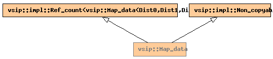

Global Namespace
Inheritance Tree
Inheritance Graph
Name Index
template <
typename
Dist0,
typename
Dist1,
typename
Dist2>
struct
vsip
::Map_data
File:
../../../vsip/map.hpp

-
Public Typedefs
std::vector<
processor_type
>
impl_pvec_type
-
Public Member function templates
template <
typename
BlockT>
constructor
Map_data
(
const_Vector
<
processor_type
, BlockT>
pvec
, const Dist0&
dist0
, const Dist1&
dist1
, const Dist2&
dist2
)
-
Public Member functions
constructor
Map_data
(const Dist0&
dist0
, const Dist1&
dist1
, const Dist2&
dist2
)
destructor
~Map_data
()
-
Public Data members
Dist0
dist0_
Dist1
dist1_
Dist2
dist2_
impl::Communicator
&
comm_
impl_pvec_type
pvec_
length_type
num_subblocks_
length_type
num_procs_
[3]
index_type
subblocks_
Generated on Sat Apr 17 11:13:08 2010 by
synopsis
(version 0.12)


 synopsis (version 0.12)
synopsis (version 0.12)